AmpCamp — сообщество, которое 1–2 раза в год собирается в красивом месте, чтобы получить опыт, который сложно получить в обычной жизни: настоящую близость, глубокие разговоры и человеческий контакт среди людей, которым не всё равно. Комьюнити строится на гуманистических ценностях, критическом мышлении и желании осознанно кутить.
REUNION 2026 — это «старичковый» кемп: собираем всех, кто уже был, чтобы объединиться снова.
| Даты | 28–31 мая 2026 (чт–вс) |
| База | Mtserlebi Resort, Квишхети, Грузия |
| Трансфер | 15:00 из Тбилиси и Кутаиси → прибытие ~18:00 |
| В стоимость входит | Проживание + питание (завтрак, обед, ужин, ночной перекус, кофе-брейк) + трансфер |
| Размещение | 2-, 3- и 4-местные номера |
| Коммуникации | Telegram: чат сообщества (~172 чел.) + чаты оргов |
| Данные | Google Sheets (финмодель + участники) |
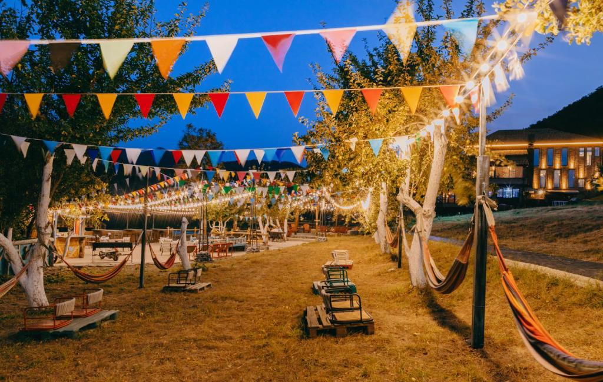
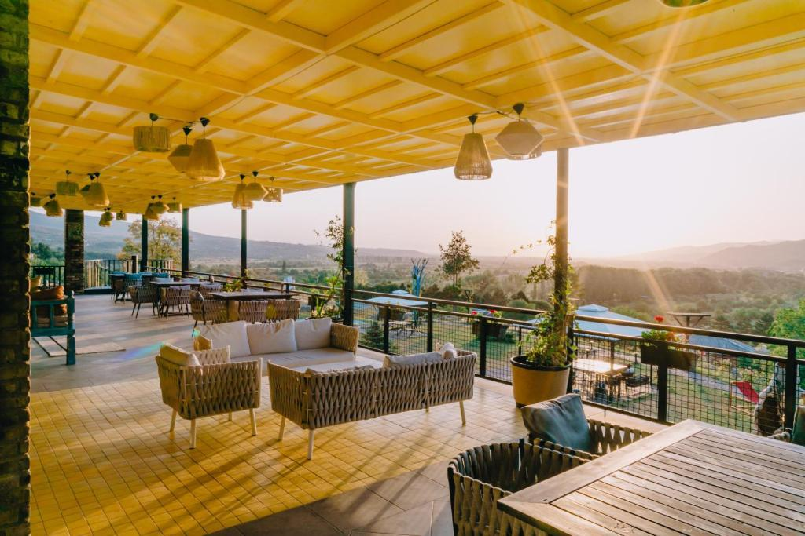
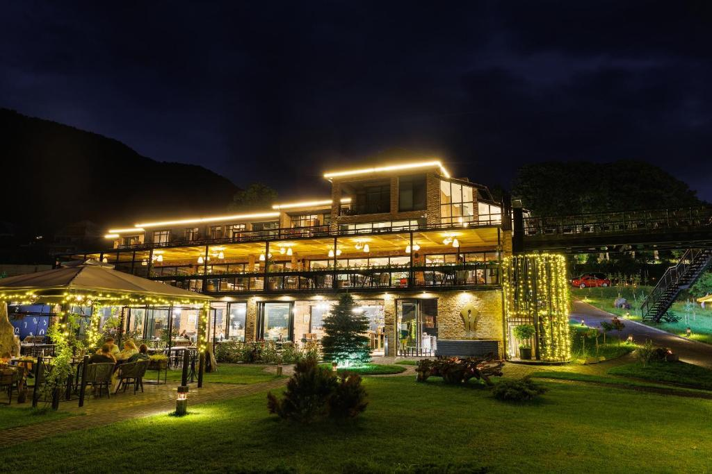
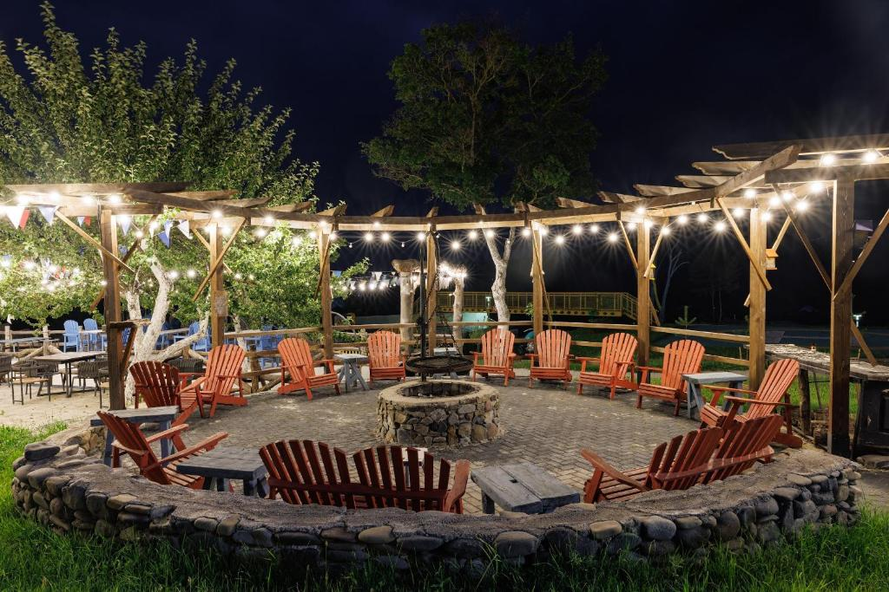
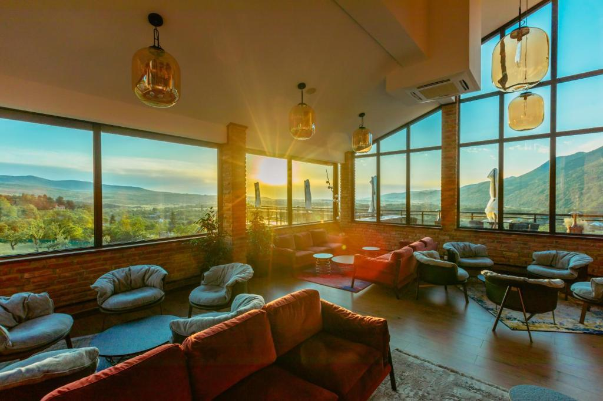
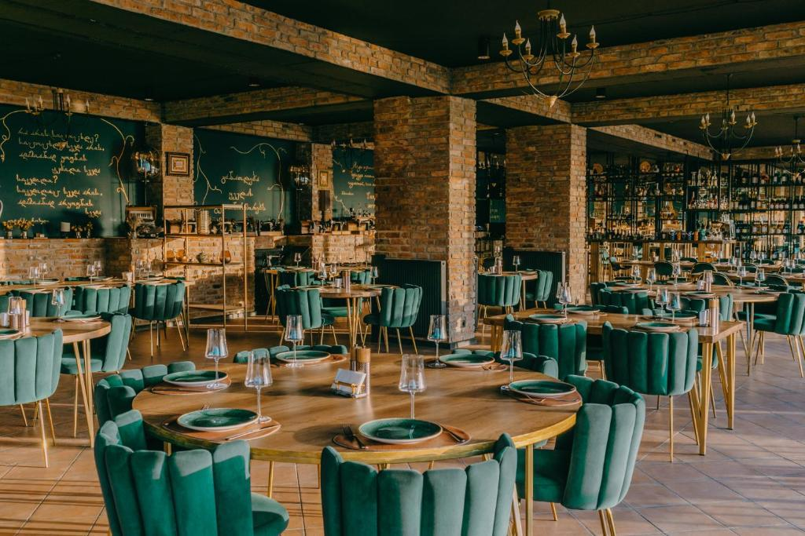
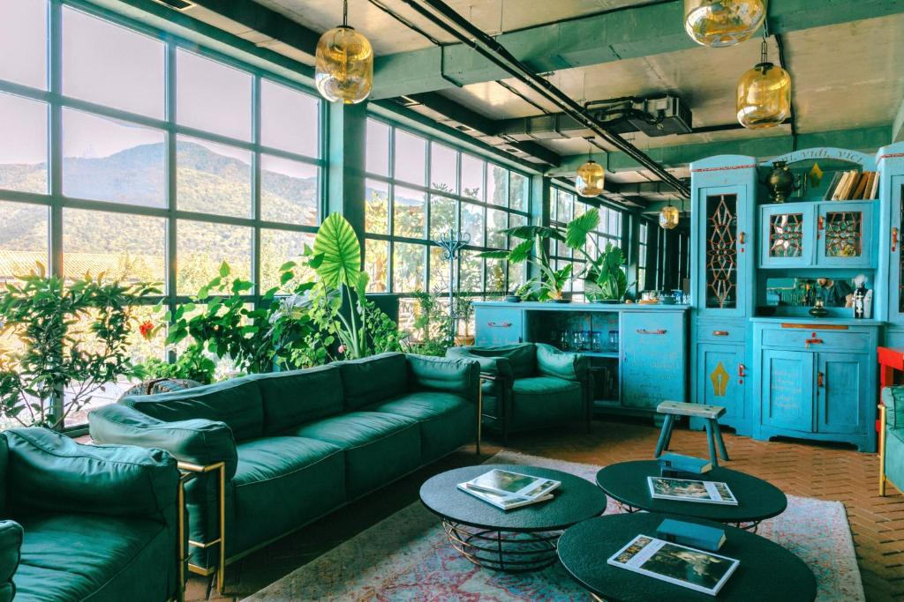
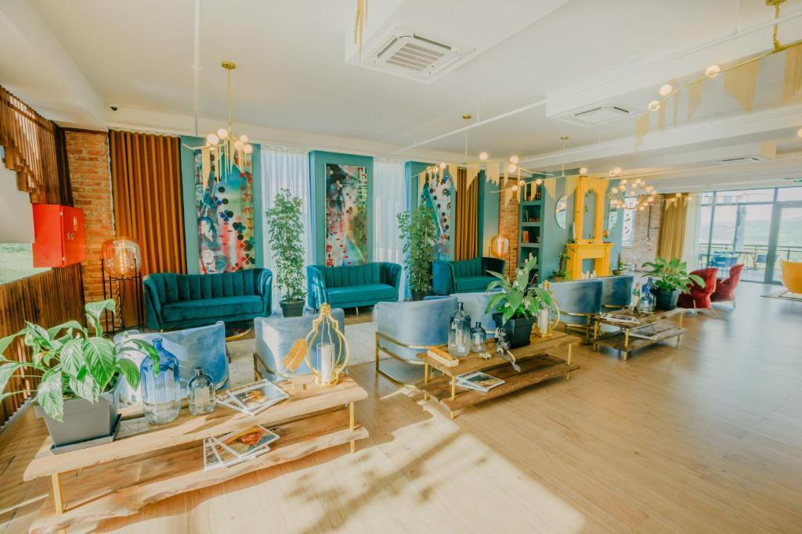
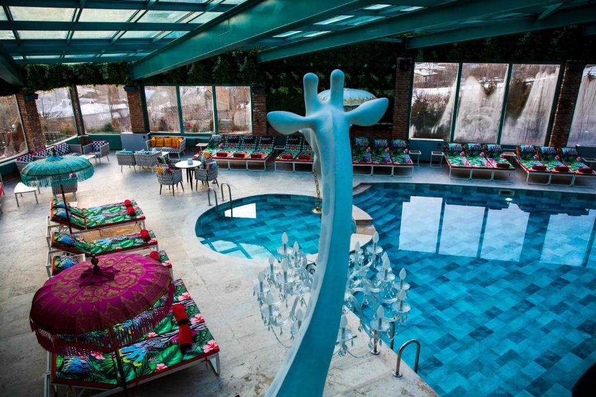
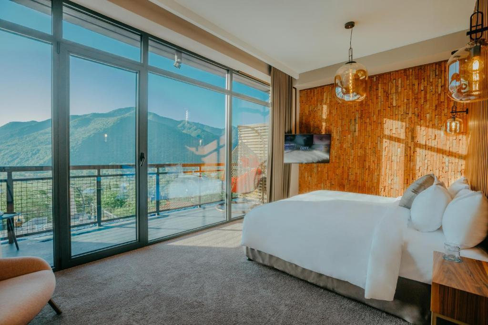
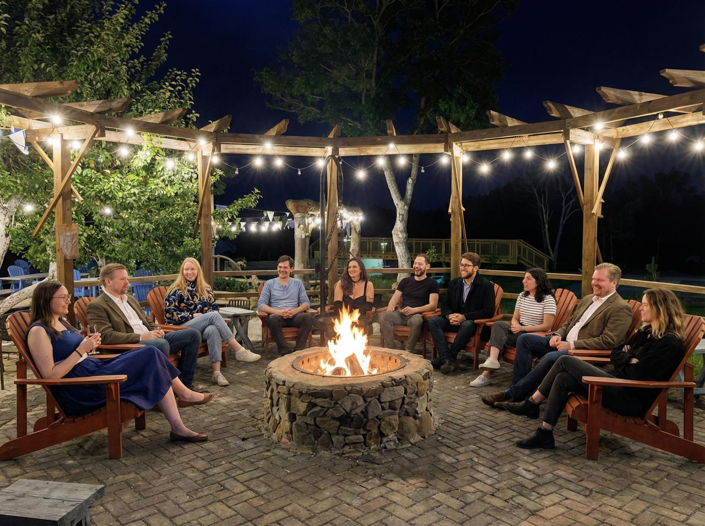
Составить сетку форматов, собрать заявки от участников на ведение форматов и собрать финальную программу. Программа должна создавать FOMO, управлять эмоциональным состоянием по дням и давать разнообразие треков.
Четверг
Заезд, онбординг. Задача: все приехали, почувствовали себя дома, погрузились в контекст.
Пятница
Полный день. Задача: включение, интерес, первые связи, энергия.
Суббота
Кульминация. Задача: глубина, пиковые переживания, максимальное раскрытие.
Воскресенье
Прощание. Задача: тёплое завершение, благодарность, что-то увезти с собой.
Четверг — Заезд
Пятница — Полный день
Суббота — Кульминация
Воскресенье — Прощание
Длительность: 30 мин – 1.5 часа (обычно). Параллельно: 2–4 формата. Ведут сами участники.
Квишхети, Грузия. Между Тбилиси и Кутаиси (~2.5 ч от каждого). Booking →
Лекторий
Светлое вытянутое помещение. 3 флипчарта, проектор. Вместит всех. Кофемашина в конце зала.
Все участникиКлуб
Огромный, бетонные стены, ноль окон. Красные прожекторы, сцена, бар. Можно курить. Можно превращать в лекторий.
Все участникиРестик (1 этаж)
Свой бар, своя сцена. Можно выступать группой. Вмещает всех.
Все участникиРестик (2 этаж)
Шведский стол, огромный зал для завтраков. Посадку можно менять.
Все участникиГигантская терраса (2 эт.)
Веранда под навесом, вытянутая. Столики можно убрать. Можно курить.
Все участникиБольшой бассейн
Треугольный неглубокий (можно стоять). Шезлонги, декор, зонтики. 30–40 человек.
30–40 чел.Executive Suite Room
Уютная комната на 2 этаже. Гостиная, диван, ковёр. Ванная с реальной ванной.
15–20 чел.Зона диванчиков у ресепшна
Две зоны: вытянутая на 15–20 чел., квадратная на 10–15 чел.
10–20 чел.Зона диванчиков у клуба
2–4 дивана, макс. 10 чел. Нет перегородки с коридором.
до 10 чел.Поляна + уличная сцена
Сцены нет (нужно строить), но есть место. Поляна вмещает всех. Рядом виноградник.
Все участникиГазон у рестика
Навес, беседка, рядом бассейн. Можно всех поместить кругом.
Все участникиКостёр
Чилл-зона, живой огонь, ~10 сидячих мест. Рядом длинный аппендикс — можно устроить сеновал.
~10 чел.Малый бассейн
2 этаж, рядом сауна. Комфортно 10 чел. Шезлонги, закуток.
~10 чел.Сауна
Комфортно 10–15 человек за раз.
10–15 чел.Игровой зал
Пинг-понг, прозрачная стена к малому бассейну. Отдельно — зал с бильярдом.
СреднийDuplex
Можно зарезервировать под интровертошную. Две кровати на двух этажах.
КамерныйВертолётная площадка
Бетонное покрытие, размер уточняется.
УточняетсяОбратная связь: Как угодно. Главное — понятно. Прямо, при личном разговоре. Предпочитает диалог, а не одностороннее сообщение.
Конфликты: Описать контекст, ощущения, пожелания. Предложить выходы. Оставаться в контакте. Всегда настроен на разрешение.
ОС: Я-сообщения. Формат: контекст→действия→следствие. Какой идеальной реакции ожидали.
Конфликты: Хладнокровно. Определяем проблему → варианты решений → консенсус → разделяем роли. Не все конфликты готова решать.
ОС: Чем более неочевидная — тем больше радует. Отлично относится к ОС про улучшения и точки роста.
Конфликты: Максимально подробно рассказать чего хотите и чего ждёте в поиске совместного решения.
ОС: Сложно принимать негативную, но она помогает. Конструктивно, через «я» сообщения, нежно, конкретно.
Конфликты: Вовремя дать ОС. Если наболело — можно личным и эмоциональным. Через я-формулировки.
Конфликты: Как умеете (потом возьмём перерыв). Любит проораться. Прямо говорить лучше, чем намекать. Лучше просто спросить.
Общее: Финальный программный комитет — все вместе. Коммуникация — Иван. People book — отдельно.
«Camper Development» — серия из ~12 глубинных интервью с участниками (январь 2026). 23 вопроса, 8 блоков. Проводились всей командой оргов. Ниже — синтез ключевых выводов.
2. Магия сближения: Глубокий человеческий контакт, атмосфера доверия, форматы создающие близость, невозможную в обычной жизни.
3. Спроектированный опыт: Программа задизайнена — эмоциональная, интеллектуальная, двигательно-игровая, телесная. Не случайная подборка.
- Овершеринг / откровенный шеринг (6–12 чел.) — катарсический опыт, когда делятся сокровенным
- Неожиданные творческие открытия — МК по стихам → человек 3 года пишет стихи
- Каддл-пати — «опыт, которого не ожидал»
- Спонтанные глубокие разговоры — бабакемп, костёр, кальян под звёздами
- Моменты единения — нигуны, когда 10 человек ощущаются как 100
- Естественное застолье — неструктурированное сближение
Паттерн: лучшие моменты = глубина + неожиданность + человеческий контакт.
- Навязывание опыта/настроения — формат заставляет делать то, к чему не готов
- Плохо сделанное закрытие — не создана эмоциональная атмосфера
- Жёсткая модерация — ломает атмосферу, неестественно
- Потерянность — «не знаю куда себя пристроить», особенно после ужина
- Длинные шеринги оргов — «занудно»
- Перегруз без альтернатив — уголок интроверта не всем подходит
- Оргов не видно как участников — перегружены организацией
Первая половина: Интеллектуальная нагрузка или сближение в малых группах.
После обеда: Переключение — физическая активность, хайкинг, бассейн. Или спокойные воркшопы.
Предвечер: Энерджайзер (Lightning Talks, PowerPoint Karaoke). Общий формат.
Вечер: Свободный выбор — диванчики, музыка, вечеринка. Максимум параллельных опций.
Ночь: Для желающих — разъеб. Для остальных — спать.
- Не хватает качественного интеллектуального контента
- Не хватает форматов на глубокое сближение
- Бывает перекос в около-психологические форматы
- Запрос: больше видеть ЧЕЛОВЕКА за форматом — не тему, а личность ведущего
Предлагаемый баланс: ~30% сближение, ~20% интеллект, ~20% свободное время, ~15% телесное/игры, ~15% вечеринки/творчество.
Спонтанность: До 25–50% программы может быть гибкой. Идея: «структурированное неструктурированное время» + букинг комнат участниками.
Важно: Качество модератора — ключевой фактор. Идеальный размер: группы до 5 чел., включая 1:1.
Критика: «Кемп пропускает этап обнюхивания — людей сразу бросают в близость, а они ещё не решили, хотят ли.» Нужен постепенный вход.
Группы: Перемешивание предпочтительнее фиксированных. Нужно минимум 30 мин focus time с одним человеком.
Время еды — стратегическое: Нужно осознанно выбирать, с кем сидеть.
Шум: Главная проблема — невозможность спать. Всегда иметь альтернативу.
Нагота/каддлы: Ок при консенте и фасилитации. Для старичкового кемпа границы можно расширить.
Ключевой принцип: Не запирать людей в этих активностях + всегда иметь альтернативу.
Что сделает кемпы лучше:
- Перемешивать людей, не давать создавать кружки
- Усилить follow-up после кемпа (блокнот, 1–2 дня на контакты)
- Делегировать задачи, чтобы орги были доступны
- Готовить ведущих форматов
- Анализировать фидбек, повторять то что зашло
- «Мудтреки» — помочь определить настроение и выбрать трек
- Глубокие уязвимые темы: дети, родители, секс, деньги, травмы
- Наращивать свободное время от пятницы к субботе
- Больше тактильности и экспериментов
Инсайт для оргов: Опыт в трансфере можно и нужно дизайнить.
| Статья | Описание | План (€) | Факт (€) |
|---|---|---|---|
| Доходы | |||
| Собрано билетов | 51 960 | 56 430 | |
| Итого доходы | 51 960 | 56 430 | |
| Расходы | |||
| Проживание | Accommodation на базе | 28 875 | — |
| Трансфер | Транспорт участников | 2 475 | — |
| Еда/кофе | Доп. расходы помимо базы | 1 200 | — |
| Мерч | Мерч для участников | 2 200 | — |
| Фото/видео | Фотограф + видеограф | 2 200 | — |
| Оборудование | Проекторы, стулья и т.д. | 1 500 | — |
| Программа | Расходники на форматы | 880 | — |
| Декор | Оформление | 500 | — |
| Расходники | Канцелярия и т.д. | 500 | — |
| Компенсации | Помощь организаторам | 4 000 | — |
| Комиссии | Потери на переводах | 2 750 | — |
| Риски | Заначка на чёрный день | 3 500 | — |
| Прочее | IT, сервисы, такси | 1 380 | — |
| preCamp | Жильё и билеты оргов | — | — |
| Итого расходы | 51 960 | — | |
| Баланс | |||
| Баланс | 0 | — | |
Факт расходов будет подтягиваться из Google Sheets.
Брейншторм идей для форматов и активностей. Пока без деталей — обсудим и отберём.
Ночное нуарное радио-шоу (странные звуки, расследования в духе Каневского) · Ночной квест-игра, Яна ведёт репортаж · Блиц-вопросы и нано-интервью · Документалка · Квест-испорченный телефон + формат по сплетням + Night Late Show · Исповедальня + запись AI с транскрибацией · Прожектор Бреслава · «Что было дальше»
Разъебная дискотека (что-то между рейвом) · Welcoming рейв · Дискотека по полчаса: 70-е, 80-е, 90-е, нулевые, десятые, двадцатые · Вместе кричать песни Кино и Король и Шут · Rap battle · Стендап · Прожарка · Кринж сессия · Караоке
Овершеринг (и то что не нравится Даше — аля 5 минут глаза в глаза) · Стереотипные сближения — наваливают с точки зрения стереотипов · Lightning Talks · Круги про сближение · Много перемешивания · Check Your Privilege — белопальтовая с реальным белым пальто · Писать валентинки · Школьный дневник · Белопальтовая сессия · Формат в полной темноте · Публичная сессия Hot or Not
Закрываю глаза и представляю базу — тёплый свет от ламп, темно, ночь, типа-палатки, но не кринжовые. Внутри: фуд-станции, бьюти-салон, чайная, одежный своп, танцы, кальянная, ковёр-вертолёт с кальяном, стрельба из лука, кидание ножей · Дерево от Лизы · Путеводитель по кемпу · Станции
Совместные танцы · Шаманские танцы солнцестояния · Танцевальная 5-минутка · Аквааэробика · Водное поло · Курсы первой помощи · Токсикология · Мастеркласс по сексу · Каддл · Ножички как в детстве
Театральные выступления и импровизация · Стишки писали и выступали · Актёры говорят на выдуманном языке — озвучивают из зала · Glory Hole + CumShot (настойка) · Прищепки (раздаём или втихую начинаем активность) · Псевдозагадка (аля шутейка про девушку с синими волосами)
Покерный турнир · Мафия + Мафия в течение нескольких дней · Шпион · Баттл по анекдотам (Батя напился) · Машинки или кораблики на радиоуправлении · «5 мужиков по очереди отвечают на вопросы»
AI воркшоп · Что-нибудь про власть · Ностальгическая сессия · Рыдательная сессия
| Кто | Статус | Задача | Дедлайн |
|---|---|---|---|
| Ваня | in prog | Ивану передать полученный от Максима контракт Оксане | 09.03 |
| Кто | Статус | Задача | Дедлайн |
|---|---|---|---|
| Все | in prog | К КОНЦУ ФЕВРАЛЯ ПРОВЕСТИ ВСЕ КАМПДЕВЫ И ВНЕСТИ В ТАБЛИЧКУ | 09.03 |
| Яна | to do | Прочитать Дашино предложение по обработке кастдев интервью и сделать комментарии | 09.03 |
| Кто | Статус | Задача | Дедлайн |
|---|---|---|---|
| Даша | to do | Внести финмодель в таблицу с деньгами | 24.02 |
| Кто | Статус | Задача | Дедлайн |
|---|---|---|---|
| Даша, Яна | to do | Собрать страницу в ноушн про команду: инструкция ко мне | 24.02 |
| Кто | Статус | Задача | Дедлайн |
|---|---|---|---|
| Все | актуально | Шизим про форматы | — |
| Яна | to do | Финализировать концепцию программы | 04.03 ⚠️ |
| Яна | to do | Оформить (систематизировать) карту опыта участника | 11.03 |
| Яна | to do | Оформить распределение ответственности | 11.03 |
| Даша | to do | Бот для сбора заявок в таблицу | 08.03 |
| Яна | to do | Текст поста в канал для сбора входящих заявок + ссылка на бота | 08.03 |
| Яна | to do | Публикация поста в канал | 09.03 |
| Даша | in prog | Обновить таблицу с ответственными за холодные сообщения. Убрать тех, кто уже на связи. Раскидать людей по холодному опросу | 09.03 |
| Все | to do | Начать писать в холодную всем людям с вопросом об участии в программе | 14.03 |
| Даша | to do | Подготовить табличку для результатов холодного опроса | 13.03 |
| Все | to do | Собрать с ответственных за направления их видение | 16.03 |
| Даша | to do | Подготовить ноушн для обработки форматов | 16.03 |
| Даша | to do | Собрать видения форматов программы в эксель с картой опыта | 18.03 |
| Все | to do | Закончить писать в холодную всем людям | 23.03 |
| Все | to do | Обсуждение и выбор форматов из собранных предложений | 23.03 |
| Даша | to do | Подготовить вступительное сообщение для чатов с участниками: про процесс, ответственных и сроки | 24.03 |
| Кто | Статус | Задача | Дедлайн |
|---|---|---|---|
| Лиза | in prog | Забукать машину для прекемпа | 02.03 |
| Кто | Статус | Задача | Дедлайн |
|---|---|---|---|
| Все | to do | Погенерить идеи на тему мерча (чо, как, когда, сколько, зачем) — назначить встречу | 24.02 |
| Ваня | to do | Пишет для Лизы пост для Тины про то что по номерам | — |